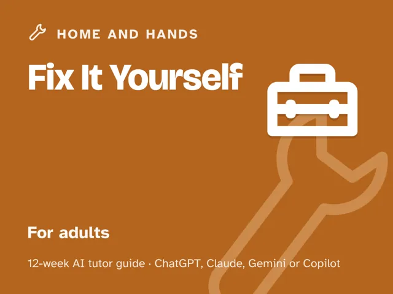

Fix It Yourself
$29Instant download: a PDF to read, a browser copy, and the AI-tutor file you hand straight to any AI assistant.Buy it on Etsy →
Take the free placement check first: 15 minutes, and it names the week to start at.
Stop calling someone for every drip, clog, and wobbly handle. This 12-week plan turns an AI tutor into a calm expert standing next to you: you snap a photo, describe the symptom, and it asks questions until you both understand the problem, then coaches you through the fix in small, checked steps. No experience needed, renter or homeowner, and it always tells you honestly when a job belongs to a licensed pro.
What you get
This is a deep, digital guide, not a checklist. Each of the 12 weeks is a ready-to-run ~60-minute session you lead yourself: you don't need any prior repair or AI experience, because every step is scripted and already written out for you.
- 12 weekly sessions, each with: a plain-language concept explanation, a concrete worked example, a timed session plan with the AI-tutor prompts built in, a "show me" checkpoint to confirm you actually got it, common mistakes to watch for, and practice.
- "Never used an AI chat assistant? Start here": a five-minute onboarding in the front matter that gets a complete beginner from zero to ready, using a free AI assistant (no paid plan needed).
- Four rescue prompts you can reach for anytime you're stuck, the AI starts doing the work for you, it feels too easy, or you want to check you really understand.
- An orientation that starts where every real fix starts (knowing your shutoffs) and the one rule that keeps you safe: diagnose before you touch, and stop at the line.
The 12 weeks
- Know Your House's Off Switches
- The Toolbox That Covers 90%
- Reading the Symptom
- Drips and Runs: Faucets & Toilets
- Walls That Take a Hit
- When the Lights Misbehave (Safely)
- Doors, Drawers, and Things That Stick
- Clogs and Slow Drains
- Caulk, Seal, Weatherproof
- Project Week I: Pick Your Repair
- Project Week II: Do the Repair
- Demo Day and the Maintenance Habit
Who it's for
Adults who want to stop feeling helpless about their own home: renters and homeowners, zero experience assumed. If you own a screwdriver and a phone, you're ready.
Why this instead of a free chatbot
A raw chatbot will happily talk you into an unsafe shortcut. This pack ships the structure and guardrails it lacks: a diagnose-first method, a real 12-week progression, and a tutor set up to confirm the power and water are off before you touch anything, and to stop you and route you to a pro when a job is genuinely dangerous. Competence with a safety net, not confident guessing.
Safety
This is educational content, not professional advice. It teaches confident-DIY-level repairs and, just as importantly, how to recognize the jobs that need a licensed pro: gas, main electrical panels, structural work. Always use your shutoffs, wear protection, and stop when unsure. In some places (all of Australia, for example) even swapping a switch or outlet is legally reserved for licensed electricians, so the guide tells you to check your local rules first.
FAQ
- Do I need any experience? None. Week 1 is literally finding your off switches; every fix is broken into small, checked steps.
- Which AI does it use? Any modern AI assistant with photo input: ChatGPT, Claude, Copilot, Gemini. Free versions are enough; no paid plan needed (free plans may cap photo uploads per day, and a clear written description works too). Never used one before? The guide's first section walks complete beginners through setup in about five minutes.
- Is this safe? Who's liable? It's educational only and teaches you to stop at dangerous work and call a licensed pro (gas, main panel, structural, roofing). You assume the usual DIY risk: use your shutoffs and protective gear, and don't improvise past your comfort.
- Renter-friendly? Yes. Most weeks are small fixes, and knowing your shutoffs matters in any home. Check your lease or ask your landlord before changing fixtures, outlets, or anything permanent.
- I'm not in the US. Does it work? Yes. The guide is written in US English, and every prompt tells the AI to use your country or region for spelling, units, money, and examples.
- Refunds? Standard marketplace refund policy applies.
$29Instant download: a PDF to read, a browser copy, and the AI-tutor file you hand straight to any AI assistant.Buy it on Etsy →